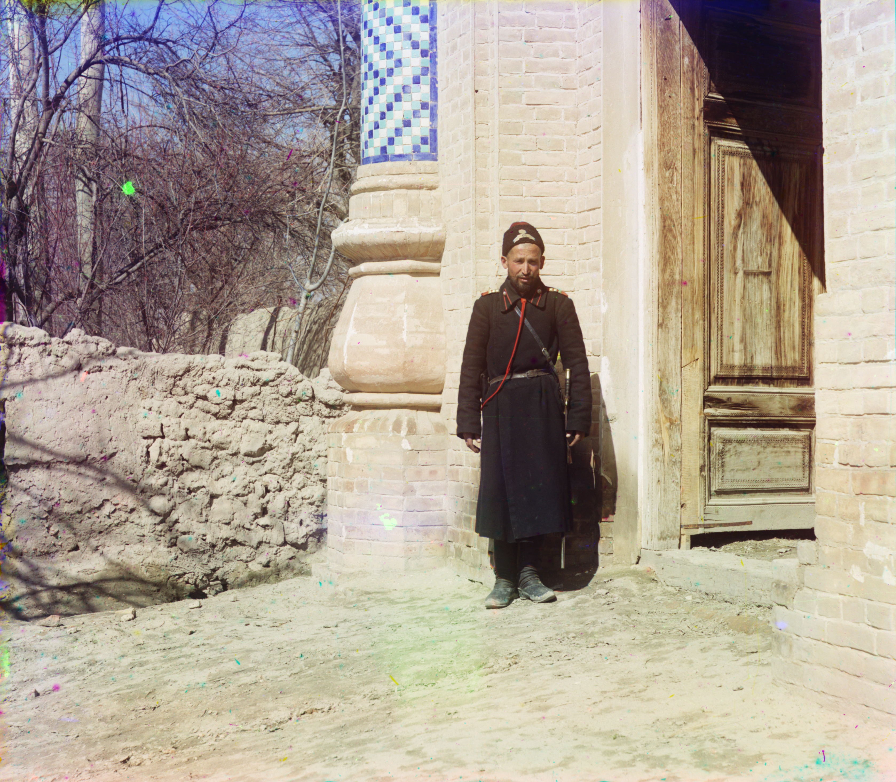

The Irani of Uzbekistan: history of the Persian-speaking Shia community deported from Merv
The 'Irani' (or 'Ironi') are a Persian-speaking Shia community living around Samarkand and Bukhara. Most trace their origin to the city of Merv (Mary) in today's Turkmenistan. In 1785 the Bukharan emir Shah Murad captured Merv, destroyed its irrigation dam, and resettled the city's population — about 100,000 people — in stages to the oases of Bukhara and Samarkand. Persian-speaking and Shia, this community preserved its language and school of law among a Sunni majority. A historical reference — facts only.

One of the little-mentioned but ancient communities in Uzbekistan's multi-ethnic fabric is the 'Irani' (or 'Ironi'). They are a Persian-speaking, Shia population living mainly around Samarkand and Bukhara, whose roots go back to the city and oasis of Merv in today's Turkmenistan. The following explains how this community came to be — facts only.
The root: Merv — a Shia city
Merv (today Mary in Turkmenistan) was one of the great cities of the East in the Middle Ages. Under the Safavids, after the Battle of Merv in 1510, the city came under Iranian influence, its Shia population grew, and it became a centre of Persian culture. For centuries afterwards Merv lay on the frontier with the Sunni Khanate of Bukhara, and clashes between the two sides were frequent.
1785: Shah Murad and the destruction of Merv
The turning point was 1785. The Bukharan emir Shah Murad (of the Manghit dynasty, also called Amir Ma'sum) captured Merv, killed its ruler, destroyed the great irrigation dam that was the city's source of life, and diverted the waters of the Murghab river elsewhere. As a result the once-flourishing Merv oasis turned into a waterless desert.

The deportation of a hundred thousand
Shah Murad resettled the city's population — about 100,000 people — in stages to the oases of Bukhara and Samarkand. This was not a single event but took place in stages over several decades. The deportees were Persian-speaking and Shia; it was precisely these two traits that set them apart from the Sunni, Uzbek and Tajik majority of their new home.
Why they did not assimilate
The deportees — the last large Persian-speaking Shia population in the region — refused to dissolve into the population of the places where they were settled, and have preserved their 'Merv' origin and Shia faith to this day. They mostly spoke Tajik (Persian) — some also Uzbek — yet were set apart by their school of law from Sunni Tajiks who spoke the same language.
Where they settled
The community settled mainly in and around the cities of Samarkand and Bukhara, and partly in the Qashqadarya oasis. In Samarkand they lived densely in certain neighbourhoods, keeping their own mosques and rituals. Members of the Irani were prominent in the cities' crafts, trade and administration — the history of the Emirate of Bukhara also records officials and court servants of Persian origin.
The Bukhara events of 1910
Tension between the Shia and Sunni communities sometimes turned into conflict. In 1910 bloody clashes between Shia and Sunni broke out in Bukhara — the events remembered in history as the 'Bukhara tragedy of 1910'. This episode remained an important memory in the community's history of preserving its identity and of its relations with the majority.
Today
There are no exact official figures, but by various unofficial estimates the Irani in Uzbekistan number several hundred thousand — in some sources close to 300,000, mainly in Samarkand (~200,000) and Bukhara (~100,000). These numbers are approximate; several mosques are officially registered for the Shia community. Although over time part of the community merged into the surrounding Tajik and Uzbek environment, the Persian language and Shia traditions have been preserved among many.
Why this matters in diaspora history
The history of the Irani shows that Uzbekistan has been not only a land that sent its own people abroad, but, over centuries, a layered space of migration that took in other peoples. This community's history stands alongside other resettled groups in the region — Arabs, Tatars, Uyghurs and Koreans — as part of Uzbekistan's ethnic map. This reference rests on historical facts only.

Sources
- Wikipedia — Shia Islam in Uzbekistan (Irani/Ironi community: origin in Merv, deportation, Tajik-speaking Shia, concentration in Samarkand and Bukhara)
- Wikipedia — Shah Murad of Bukhara (1785 capture and destruction of Merv; deportation of ~100,000 to Bukhara and Samarkand oases)
- The Diplomat — 'The Desolation of Merv' (1785 destruction, diversion of the Murghab, resettlement of the population)
- Knowledge Central Asia (Univ. of Illinois) — 'Between Karbala and the Tragedy in Bukhara, 1910' (Bukhara's Shiites; 1910 clashes)